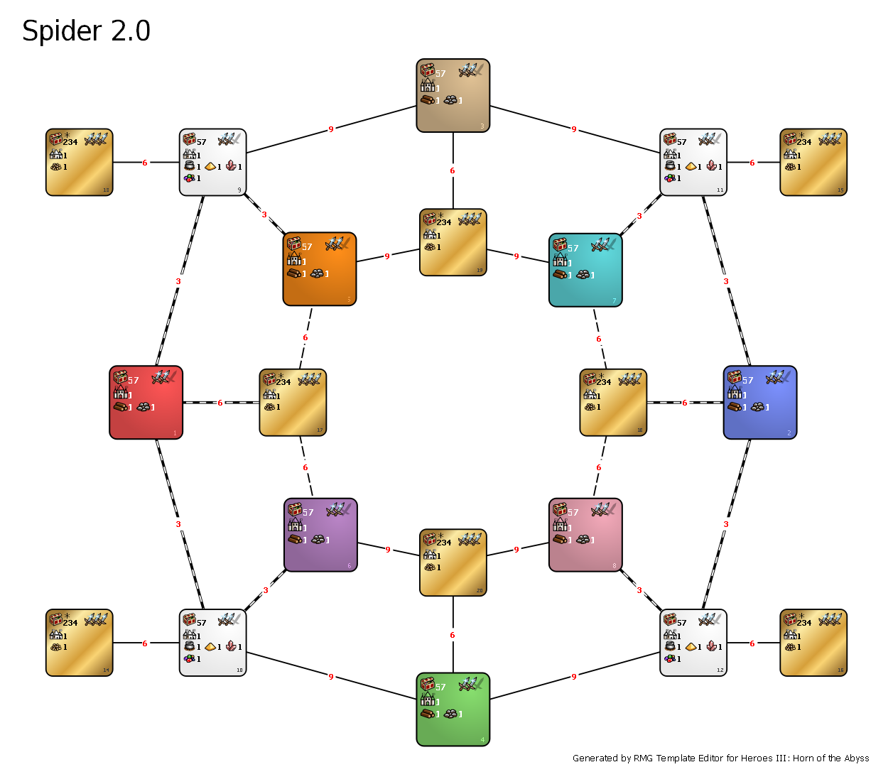

Spider 2.0

Spider 2.0 is templated created by Kosixon for purpose of restoring the Spider template, that wasn't played lately.
It has lot of minor and major changes, that are listed below.
Changes compared to Spider:
- Added towns without forts to Treasure zones (17-24),
- Deleted zones 13-16 and moved zones 21-24 on its place,
-
Zones treasure value changes:
-
Zones 1-12:
- Increased minimum value of treasure in 3rd group from 100 to 500,
- Increased density of treasure in 3rd group from 9 to 10,
- Zones 17-24:
- Decreased minimum value of treasure in 3rd group from 6000 to 5000,
- Increased maximum value of treasure in 3rd group from 8999 to 10000,
- Decreased maximum value of treasure in 2nd group from 16000 to 15000,
-
Terrains disabled in treasure zones (17-24):
- Swamp,
- Snow,
- Sand,
-
Zones connections changes:
- Guard in connections 1-24, 2-21, 3-23, 4-22 changed from 12500 to 6000 value,
- Guard in connections 5-24, 6-24, 7-21, 8-21, 5-22, 7-22, 6-23, 8-23 changed from 3000 to 9000 value,
-
Zones size changes:
- Size of zones 17-24 increased from 15 to 25,
- Size of zones 9-12 decreased from 30 to 25,
-
Zones mines changes:
- Deleted Mercury, Sulfur, Crystal and Gem mine from zones 1-8,
- Set number of Mercury, Sulfur, Crystal and Gem mines for 1 in zones 9-12,
- Banned artifacts: Bird of Perception, Stoic Watchman, Emblem of Cognizance, Statesman's Medal, Diplomat's Ring, Ambasador's Sash, Everflowing Crystal Cloak, Ring of Infinite Gems, Everpouring Vial of Mercury, Eversmoking Ring of Sulfur, Endless Sack of Gold, Endless Bag of Gold, Endless Purse of Gold,
- Enabled artifacts: Cornucopia, Golden Goose,
- Banned skills: Eagle Eye, Learning, First Aid,
- Banned spells: Inferno, Fire Shield, Sorrow, Slayer, Counterstrike, Magic Mirror, Sacrifice,
- Banned Heroes: Ufretin, Straker, Piquedram, Christian, Edric, Rion, Pyre, Gerulf, Korbac, Verdish, Gurnisson,
- Banned objects:
-
On whole map:
- Seer's Hut,
-
In zones 17-24:
- Mercenary Camp,
- Marletto Tower,
- Star Axis,
- Garden of Revelation,
- Learning Stone,
- Gazebo,
- Tree of Knowledge,
- With Hut,
- Hermit Shack,
- Shrines of tier 1-3,
- Pandoras' Boxes with army of tier 1-4,
- Pandoras' Boxes with spells tier 1-3,
- Treasure class artifacts,
- Dwellings of tier 1-4,
- Object changes on whole map:
-
Griffin Conservatory:
- Value increased from 2000 to 5000,
- Max per zone set to 3,
-
Imp Cache:
- Value decreased from 5000 to 3000.